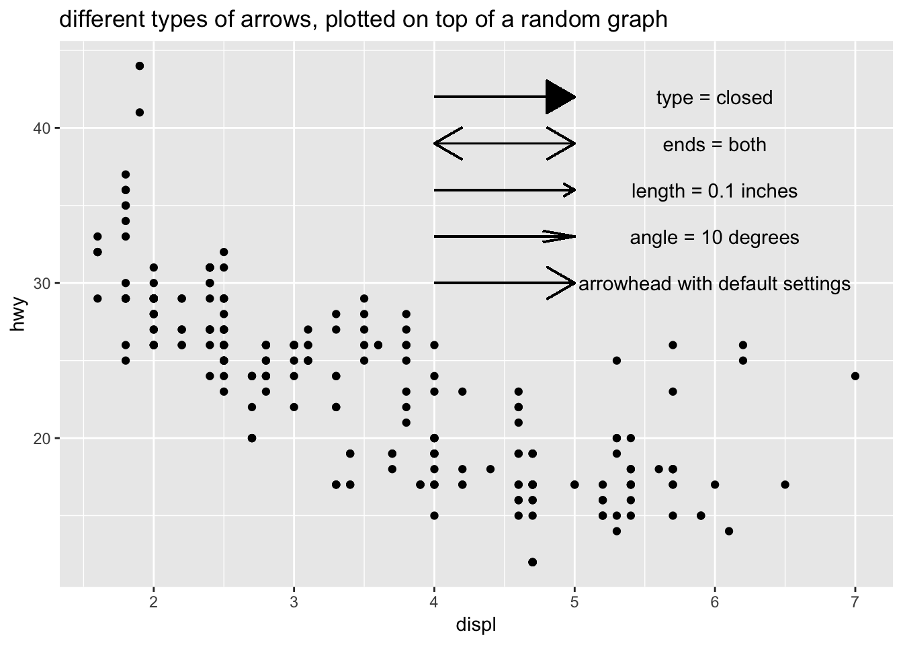
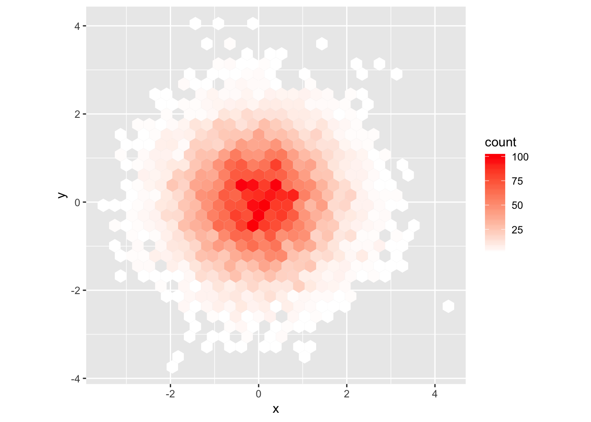

Chapter 28 - Graphics for communication
28.2.1 Exercises
1. Create one plot on the fuel economy data with customised title, subtitle, caption, x, y, and colour labels.
To do this, we use add labs() to the ggplot along with the title, subtitle, caption, x, y, and color arguments. I’ve filled them in using what was provided in the book.
ggplot(data = mpg, aes(x = displ, y = hwy)) +
geom_point(aes(color = class)) +
geom_smooth(se = FALSE) +
labs(
title = "Fuel efficiency generally decreases with engine size",
subtitle = "Two seaters (sports cars) are an exception because of their light weight",
caption = "Data from fueleconomy.gov",
x = "Engine displacement (L)",
y = "Highway fuel economy (mpg)",
color = "Car type"
)## `geom_smooth()` using method = 'loess' and formula 'y ~ x'2. The geom_smooth() is somewhat misleading because the hwy for large engines is skewed upwards due to the inclusion of lightweight sports cars with big engines. Use your modelling tools to fit and display a better model.
A better model would be to use a simple linear model (straight line fit) between hwy and displ. To do this the fast way, we could just specify geom_smooth(method = 'lm'). If we wanted to use our modeling tools, we could manually specify the model using lm(), then fit the predicted values on top of the graph. There are even two ways to do this, either by manually plotting the slope and intercept using geom_abline(), or by generating predictions for a grid of displ values and plotting the line using geom_line().
# using geom_smooth(method = "lm")
ggplot(data = mpg, aes(x = displ, y = hwy)) +
geom_point(aes(color = class)) +
geom_smooth(se = FALSE, method="lm") +
labs(
title = "Plotted using geom_smooth(method = 'lm', se = F)"
)# using geom_line()
mpg_mod <- lm(hwy ~ displ, data = mpg)
grid <- mpg %>%
data_grid(displ) %>%
add_predictions(mpg_mod)
grid## # A tibble: 35 x 2
## displ pred
## <dbl> <dbl>
## 1 1.6 30.0
## 2 1.8 29.3
## 3 1.9 29.0
## 4 2 28.6
## 5 2.2 27.9
## 6 2.4 27.2
## 7 2.5 26.9
## 8 2.7 26.2
## 9 2.8 25.8
## 10 3 25.1
## # … with 25 more rowsggplot(mpg, aes(x=displ)) +
geom_point(aes(y = hwy, color = class)) +
geom_line(aes(y = pred), data = grid) +
labs(
title = "Plotted using lm(), grid(), add_predictions(), and geom_line()"
)# using geom_abline()
ggplot(mpg, aes (x=displ, y=hwy)) +
geom_point(aes(color = class))+
geom_abline(intercept = mpg_mod$coefficients[1], slope = mpg_mod$coefficients[2]) +
labs(
title = "Plotted using lm() and geom_abline() with the coefficients of the model",
subtitle = "notice how the line extends to the edges of the graph"
)
3. Take an exploratory graphic that you’ve created in the last month, and add informative titles to make it easier for others to understand.
I’ve taken a plot from earlier in this document comparing diamond size by quality of cut and plotted it with labels to make it easier to understand.
diamonds %>% ggplot (aes(x = cut, y = carat))+
geom_boxplot(aes(color = cut))+
labs(title = "Diamonds with higher quality cuts are generally smaller",
subtitle = "Boxplot of diamond carat size vs quality of cut",
x = "Quality of cut",
y = "Carat",
caption = "data obtained from ggplot2 built-in dataset 'diamonds'")28.3.1 Exercises
1. Use geom_text() with infinite positions to place text at the four corners of the plot.
The example in the chapter uses a tibble to store one label with its associated parameters, which hints to us that we can populate this tibble with multiple labels with any parameters of our choosing. For this exercise, we want to place the labels in each of four corners. To do this, we can add more entries (rows) to the tibble that correspond to these labels and their locations. Then, we can pass this tibble of labels into geom_text().
label <- tibble(
displ = c(-Inf, Inf, -Inf, Inf),
hwy = c(Inf, Inf, -Inf, -Inf),
label = c("topleft", "topright", "bottomleft", "bottomright"),
hjust = c("left", "right", "left", "right"),
vjust = c("top", "top", "bottom", "bottom")
)
label## # A tibble: 4 x 5
## displ hwy label hjust vjust
## <dbl> <dbl> <chr> <chr> <chr>
## 1 -Inf Inf topleft left top
## 2 Inf Inf topright right top
## 3 -Inf -Inf bottomleft left bottom
## 4 Inf -Inf bottomright right bottomggplot(mpg, aes(displ, hwy)) +
geom_point() +
geom_text(aes(label = label, hjust = hjust, vjust = vjust), data = label)2. Read the documentation for annotate(). How can you use it to add a text label to a plot without having to create a tibble?
annotate() adds a geom of your choice to the plot, but instead of supplying the parameters in a data frame, you can supply it using vectors. This is useful if you just want to add a simple text label to a part of the plot without having to make a tibble with one row. An example is below.
ggplot(mpg, aes(displ, hwy)) +
geom_point(aes(color = cyl)) +
annotate("text", x = 6, y = 40, label = "I added this using annotate()")3. How do labels with geom_text() interact with faceting? How can you add a label to a single facet? How can you put a different label in each facet? (Hint: think about the underlying data.)
Labels using geom_text() get placed at the same location on each facet if the x / y coordinates are hard coded (in this instance, they are hard coded as x = 6, y = 40). If only a single label is provided, it is duplicated for each facet.
# add to all facets
label <- tibble(
displ = 6,
hwy = 40,
label = "my_label"
)
label## # A tibble: 1 x 3
## displ hwy label
## <dbl> <dbl> <chr>
## 1 6 40 my_label# labels get placed at the same location on each facet if the x / y coordinates are hard coded
ggplot (mpg, aes(displ, hwy))+
geom_point()+
geom_text(data = label, aes(label = label))+
facet_wrap(~cyl)In order to add the label to just one of the facets, the tibble containing your labels should include the variable you are facetting on (in this case, cyl). We set the value of cyl to 4, in order for the label to show up only in the graph for cyl=4.
# add to a single facet
label <- tibble(
displ = 6,
hwy = 40,
cyl = 4,
label = "my_label for cyl=4"
)
label## # A tibble: 1 x 4
## displ hwy cyl label
## <dbl> <dbl> <dbl> <chr>
## 1 6 40 4 my_label for cyl=4ggplot (mpg, aes(displ, hwy))+
geom_point()+
geom_text(data = label, aes(label = label))+
facet_wrap(~cyl)To add a different label to each facet, we can expand the tibble in the above example to have a row for each value of cyl, along with the corresponding unique label.
# add unique labels to each facet
label <- tibble(
displ = 6,
hwy = 40,
cyl = c(4,5,6,8),
label = c("cyl=4","cyl=5","cyl=6","cyl=8")
)
label## # A tibble: 4 x 4
## displ hwy cyl label
## <dbl> <dbl> <dbl> <chr>
## 1 6 40 4 cyl=4
## 2 6 40 5 cyl=5
## 3 6 40 6 cyl=6
## 4 6 40 8 cyl=8ggplot (mpg, aes(displ, hwy))+
geom_point()+
geom_text(data = label, aes(label = label))+
facet_wrap(~cyl)4. What arguments to geom_label() control the appearance of the background box?
The fill aesthetic dictates the color of the background of the label. In the example below, I label highest 5 displ data points and fill based on auto or manual. You can also color the text and border of the label using color. To get rid of the black border (but keep the fill), use label.size = 0. It may be helpful to call geom_label() before geom_point(), or else the label will be placed over the data point and mask it.
label <- mpg %>% arrange(desc(displ)) %>% head(5)
label## # A tibble: 5 x 11
## manufacturer model displ year cyl trans drv cty hwy fl class
## <chr> <chr> <dbl> <int> <int> <chr> <chr> <int> <int> <chr> <chr>
## 1 chevrolet corve… 7 2008 8 manu… r 15 24 p 2sea…
## 2 chevrolet k1500… 6.5 1999 8 auto… 4 14 17 d suv
## 3 chevrolet corve… 6.2 2008 8 manu… r 16 26 p 2sea…
## 4 chevrolet corve… 6.2 2008 8 auto… r 15 25 p 2sea…
## 5 jeep grand… 6.1 2008 8 auto… 4 11 14 p suv# color code background based on category, if label comes after geom_point(), may mask the point as demonstrated below
ggplot (mpg, aes(displ, hwy))+
geom_point()+
geom_label(data = label, aes(label = trans, fill = trans))# color the text and border, call label before geom_point(), now the points show up over the labels
ggplot (mpg, aes(displ, hwy))+
geom_label(data = label, aes(label = trans, color = trans))+
geom_point()5. What are the four arguments to arrow()? How do they work? Create a series of plots that demonstrate the most important options.
To add an arrow to your plot, you can use geom_segment() with the arrow argument. The arrow option of geom_segment() receives the output of arrow(), which has four arguments: angle which describes the width of the arrow head, length which is the length of the arrow head from tip to base, ends which indicates which sides to put the arrow heads on, and type which indicates whether the arrow head should be an open or closed triangle.
Below are examples of how to customize your arrows by toggling the arguments to arrow(). I initially tried to compile all the variations of the arrow arguments in order to plot the different types of arrows all at once using one geom_segment() call (similar to how you can lump multiple labels together at different locations using geom_text()). However it doesn’t seem like you can pass a data frame of arguments into the arrow() function by putting it inside aes(). The code below errors and produces segments wihtout arrowheads. So, I resorted to just calling geom_segment 4 times, in order to compare the different arrow types.
label <- tibble(
displ = 6,
hwy = c(30,33,36,39,42),
x = 4,
y = c(30,33,36,39,42),
xend = 5,
yend = c(30,33,36,39,42),
angle = c(30, 10, 30, 30, 30),
length = c(unit(0.25, "inches"), unit(0.25, "inches"), unit(0.1, "inches"), unit(0.25, "inches"), unit(0.25, "inches")),
ends = c("last", "last", "last", "both", "last"),
type = c("open", "open", "open", "open", "closed"),
label = c("arrowhead with default settings", "angle = 10 degrees", "length = 0.1 inches", "ends = both", "type = closed")
)
label## # A tibble: 5 x 11
## displ hwy x y xend yend angle length ends type label
## <dbl> <dbl> <dbl> <dbl> <dbl> <dbl> <dbl> <dbl> <chr> <chr> <chr>
## 1 6 30 4 30 5 30 30 0.25 last open arrowhead …
## 2 6 33 4 33 5 33 10 0.25 last open angle = 10…
## 3 6 36 4 36 5 36 30 0.1 last open length = 0…
## 4 6 39 4 39 5 39 30 0.25 both open ends = both
## 5 6 42 4 42 5 42 30 0.25 last closed type = clo…ggplot (mpg, aes(displ, hwy))+
geom_point()+
geom_segment(aes( x = 4, y =30, xend = 5, yend = 30), arrow = arrow())+
geom_segment(aes( x = 4, y =33, xend = 5, yend = 33), arrow = arrow(angle = 10))+
geom_segment(aes( x = 4, y =36, xend = 5, yend = 36), arrow = arrow(length = unit(0.1, "inches")))+
geom_segment(aes( x = 4, y =39, xend = 5, yend = 39), arrow = arrow(ends = "both"))+
geom_segment(aes( x = 4, y =42, xend = 5, yend = 42), arrow = arrow(type = "closed"))+
geom_text(data = label, aes(label = label))+
labs (title = "different types of arrows, plotted on top of a random graph")
# doesn't work if you try to map the arrow arguments using aes()
ggplot (mpg, aes(displ, hwy))+
geom_point()+
geom_segment(data = label, aes( x = x, y =y, xend = xend, yend = yend, arrow = arrow(angle = angle, ends = ends, type = type)))+
geom_text(data = label, aes(label = label))+
labs (title = "cannot map arguments to arrow() using aes()")## Warning: Ignoring unknown aesthetics: arrow## Don't know how to automatically pick scale for object of type arrow. Defaulting to continuous.## Warning in rep(x$angle, length.out = maxn): 'x' is NULL so the result will
## be NULL## Warning in rep(x$length, length.out = maxn): 'x' is NULL so the result will
## be NULL## Warning in rep(x$ends, length.out = maxn): 'x' is NULL so the result will
## be NULL## Warning in rep(x$type, length.out = maxn): 'x' is NULL so the result will
## be NULLHere is a cleaned up version that isn’t randomly plotted on top of the mpg dataset.
label <- tibble(
x = 6,
y = c(17,14,11,8,5),
label = c("arrowhead with default settings", "angle = 10 degrees", "length = 0.1 inches", "ends = both", "type = closed")
)
label## # A tibble: 5 x 3
## x y label
## <dbl> <dbl> <chr>
## 1 6 17 arrowhead with default settings
## 2 6 14 angle = 10 degrees
## 3 6 11 length = 0.1 inches
## 4 6 8 ends = both
## 5 6 5 type = closedggplot (data = label)+
geom_segment(aes( x = 4, y =17, xend = 5, yend = 17), arrow = arrow())+
geom_segment(aes( x = 4, y =14, xend = 5, yend = 14), arrow = arrow(angle = 10))+
geom_segment(aes( x = 4, y =11, xend = 5, yend = 11), arrow = arrow(length = unit(0.1, "inches")))+
geom_segment(aes( x = 4, y =8, xend = 5, yend = 8), arrow = arrow(ends = "both"))+
geom_segment(aes( x = 4, y =5, xend = 5, yend = 5), arrow = arrow(type = "closed"))+
geom_text(data = label, aes(label = label, x = x, y = y))+
labs (title = "Different types of arrows!")+
coord_cartesian(xlim = c(3,8), ylim = c(1, 20))Although there wasn’t an exercise for this, here are some examples of using the other suggested additions such as: geom_hline() and geom_rect()
# adding a horizontal line to focus on points above or below
ggplot (mpg, aes(displ, hwy))+
geom_point(aes(color = cyl))+
geom_hline(yintercept = 35, color = "red", size = 1)# boxing an area of the graph to emphasize what you want to focus on
ggplot (mpg, aes(displ, hwy))+
geom_point(aes(color = cyl))+
geom_rect( xmin = 6, xmax = 7.2, ymin = 15, ymax = 30, fill = NA, color = "red")# use geom_rect with aes() to draw boxes on top of points in a graph
ggplot (mpg, aes(displ, hwy))+
geom_point(aes(color = cyl))+
geom_rect( aes (xmin = displ-0.1, xmax = displ+0.1, ymin = hwy-0.1, ymax = hwy+0.1))28.4.4 Exercises
1. Why doesn’t the following code override the default scale?
This exercise follows from this code in the chapter, which provides the default coloring of the graph:
df <- tibble(
x = rnorm(10000),
y = rnorm(10000)
)
ggplot(df, aes(x, y)) +
geom_hex() +
coord_fixed()
The code provided in the exercise does not change the color gradient to white/red. This is because scale_fill_gradient() should be used instead of scale_color_gradient, since the geom_hex() graphics need to be “filled”.
# does not change the color gradient because
ggplot(df, aes(x, y)) +
geom_hex() +
scale_colour_gradient(low = "white", high = "red") +
coord_fixed()# using scale_fill_gradient now changes the colors!
ggplot(df, aes(x, y)) +
geom_hex() +
scale_fill_gradient(low = "white", high = "red") +
coord_fixed()
2. What is the first argument to every scale? How does it compare to labs()?
Based on the documentation, the first argument to scale_x_continuous() is name. If the name is modified by calling scale_x_continuous(name = “my_name”), the modified name “my_name” is displayed instead of the default. The same can be done using labs(), by changing the appropriate label. In the example below, you can use either scale_x_continuous(name=“my_name”) or labs(x = “my_name”) to change the label of the x- axis.
# change x axis label using scale_x_continuous
ggplot(mpg, aes(displ, hwy))+
geom_point()+
scale_x_continuous(name = "a new x-axis name using scale_x_continuous()")# change x axis label using labs()
ggplot(mpg, aes(displ, hwy))+
geom_point()+
labs(x = "a new x-axis name using labs()")3. Change the display of the presidential terms by:
- Combining the two variants shown above.
The two variants referred to by this question are:
# variant 1
presidential %>%
mutate(id = 33 + row_number()) %>%
ggplot(aes(start, id)) +
geom_point() +
geom_segment(aes(xend = end, yend = id)) +
scale_x_date(NULL, breaks = presidential$start, date_labels = "'%y")# variant 2
presidential %>%
mutate(id = 33 + row_number()) %>%
ggplot(aes(start, id, colour = party)) +
geom_point() +
geom_segment(aes(xend = end, yend = id)) +
scale_colour_manual(values = c(Republican = "red", Democratic = "blue"))We can see that version 1 has the customized breaks on the x-axis but no coloration, and version 2 has coloration but the breaks on the x-axis are not customized. The combined version with both a customized x-axis as well as coloration is below.
# combining variant 1 and 2
presidential %>%
mutate(id = 33 + row_number()) %>%
ggplot(aes(start, id, color = party)) +
geom_point() +
geom_segment(aes(xend = end, yend = id)) +
scale_x_date(NULL, breaks = presidential$start, date_labels = "'%y") +
scale_colour_manual(values = c(Republican = "red", Democratic = "blue"))- Improving the display of the y axis.
The y-axis can be improved by showing each tick corresponding to a single presidential number using scale_y_continuous and setting the breaks.
presidential2 <- presidential %>%
mutate(id = 33 + row_number())
presidential2 %>%
ggplot(aes(start, id, color = party)) +
geom_point() +
geom_segment(aes(xend = end, yend = id)) +
scale_x_date(NULL, breaks = presidential$start, date_labels = "'%y") +
scale_colour_manual(values = c(Republican = "red", Democratic = "blue")) +
scale_y_continuous(NULL, breaks = presidential2$id)- Labelling each term with the name of the president.
The names of each president are already in the data frame in the $name column, so we can use geom_text() setting the labels to presidential$name. The default is to put the label where the geom_point() is, which is quite ugly. So, we can change this by adjusting the vjust and hjust parameters, placing the labels below and to the right of each point.
presidential2 %>%
ggplot(aes(start, id, color = party)) +
geom_point() +
geom_segment(aes(xend = end, yend = id)) +
scale_x_date(NULL, breaks = presidential$start, date_labels = "'%y") +
scale_colour_manual(values = c(Republican = "red", Democratic = "blue")) +
scale_y_continuous(NULL, breaks = presidential2$id)+
geom_text(aes(label = presidential$name), vjust = 1.2, hjust = -0.5, show.legend = F)- Adding informative plot labels.
To do this, we remove the “NULL” from scale_x_date() and scale_y_continuous(), then add the labels using labs().
presidential2 %>%
ggplot(aes(start, id, color = party)) +
geom_point() +
geom_segment(aes(xend = end, yend = id)) +
scale_x_date(breaks = presidential$start, date_labels = "'%y") +
scale_colour_manual(values = c(Republican = "red", Democratic = "blue")) +
scale_y_continuous(breaks = presidential2$id)+
geom_text(aes(label = presidential$name), vjust = 1.2, hjust = -0.5, show.legend = F)+
labs (title = "Presidential terms, labeled by party affiliation",
caption = "data from built-in R dataset: presidential",
x = "year",
y = "President number",
color = "Political party")- Placing breaks every 4 years (this is trickier than it seems!).
I’m assuming that this refers to placing a tick 4 years after the start of any presidential term that lasts longer than 4 years. For example, if a presidential term is 8 years, there should be a tick in the middle. If a term was cut short and was only 5 years, there should still be a tick 4 years after the start date. To do this, we can calculate the diference between each adjacent point in presidential$start. If it is longer than 4 years, we insert a tick at 4 years after the start date. To implement this, we can use a simple for loop a long with some conditional statements to check whether each term lasted longer than 4 years.
years <- lubridate::year(presidential$start)
appended_years <- vector()
for (i in 1:(length(years)-1)) {
appended_years <- c(appended_years, presidential$start[i])
if (years[i+1] - years[i] >4)
appended_years <- c(appended_years, presidential$start[i] + dyears(4))
if(i == (length(years)-1))
appended_years <- c(appended_years, presidential$start[i+1])
}
appended_years## [1] -6190 -4730 -3268 -2232 -772 -346 1114 1681 2576 4037 5497
## [12] 6959 8420 9880 11342 12802 14264#convert back to a date-time
class(appended_years) <- "Date"
presidential2 %>%
ggplot(aes(start, id, color = party)) +
geom_point() +
geom_segment(aes(xend = end, yend = id)) +
scale_x_date(breaks = appended_years, date_labels = "'%y") +
scale_colour_manual(values = c(Republican = "red", Democratic = "blue")) +
scale_y_continuous(breaks = presidential2$id)+
geom_text(aes(label = presidential$name), vjust = 1.2, hjust = -0.5, show.legend = F)+
labs (title = "Presidential terms, labeled by party affiliation",
caption = "data from built-in R dataset: presidential",
x = "year",
y = "President number",
color = "Political party")4. Use override.aes to make the legend on the following plot easier to see.
We can use the guides() function with guide_legend(override.aes = list(alpha=1)) to “override” the alpha = 1/20 for the legend. I turn it back to a value of 1 in order to make the points in the legend easier to see.
# points are very faint on the legend
ggplot(diamonds, aes(carat, price)) +
geom_point(aes(colour = cut), alpha = 1/20)# change the alpha back to 1 just for the legend to make points visible
ggplot(diamonds, aes(carat, price)) +
geom_point(aes(colour = cut), alpha = 1/20)+
guides(color = guide_legend(override.aes = list (alpha = 1)))